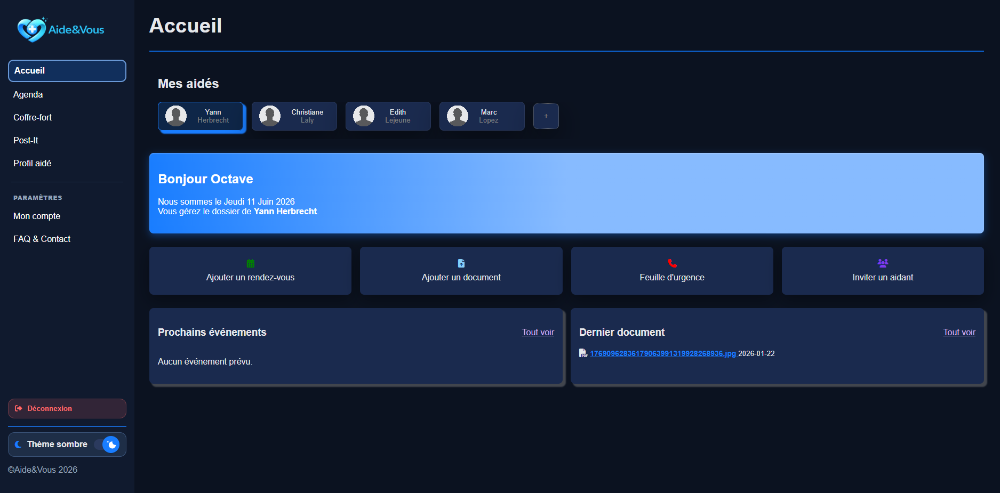
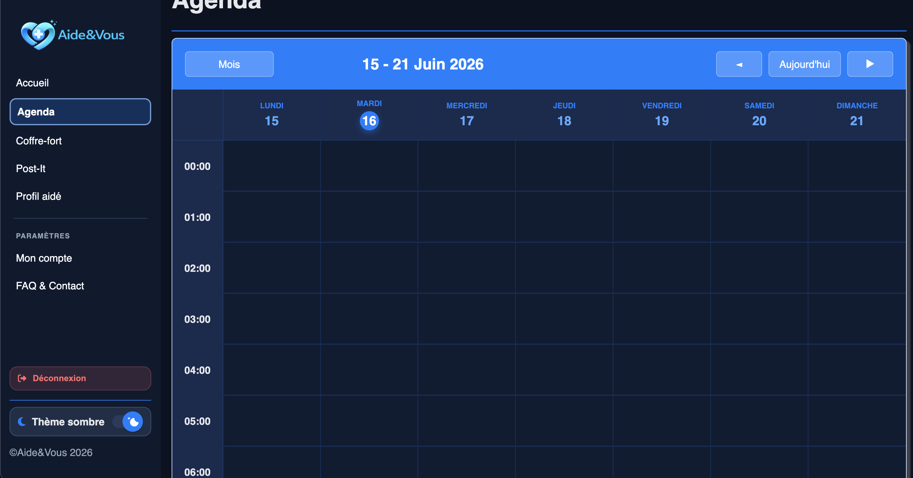

Aide&Vous est un coffre-fort numérique pensé pour simplifier le quotidien des aidants familiaux. C'est une application web qui permet de rassembler et d'organiser facilement les documents médicaux de leurs proches. Elle propose notamment une lecture automatique des ordonnances via un script Python, un agenda partagé et une gestion fine des accès.
7 membres, 3 phases, 1 application complète en production.
Quand on s'occupe d'un proche, on se retrouve vite sous une montagne de papiers : ordonnances, résultats d'analyses, rappels... L'information est souvent éparpillée et difficile à partager avec les autres membres de la famille.
Nous avons créé un espace unique pour tout regrouper. On y dépose un document médical, et l'application le classe et lit les médicaments importants grâce à un script Python. On y trouve aussi un agenda commun et une fiche d'urgence.
J'ai travaillé avec l'équipe de développement sur le coffre-fort numérique, le lien avec le script d'analyse Python, la gestion des accès, et la rédaction de la documentation technique tout au long du projet.
Mise en avant du module d'intelligence documentaire.
La fonctionnalité phare : Quand on ajoute un document, le système devine de quoi il s'agit. S'il s'agit d'une ordonnance, notre script Python se charge de lire le texte et d'en extraire le nom des médicaments pour les enregistrer automatiquement et sans erreur.
Gestion complète des événements médicaux (RDV, traitements, rappels) accessible par tous les membres du cercle de soin, avec vues semaine et mois.
Système de permissions granulaires défini à l'invitation. Un aidant peut avoir accès en lecture seule, en contribution ou en administration du coffre-fort.
Synthèse d'urgence regroupant les données vitales de la personne aidée (groupe sanguin, allergies, médecin traitant, cercle de soin) en un seul écran.
Trois phases incrémentales sur deux mois.
Nous avons commencé par concevoir la base de données et réfléchir au fonctionnement global. Il a aussi fallu vérifier que notre idée d'analyse d'image en Python tenait la route, créer les maquettes et présenter le projet devant le jury.
Nous nous sommes ensuite concentrés sur le code Python. L'objectif était de prendre une image, de l'analyser, de deviner le type de document médical, et d'isoler avec précision les traitements prescrits.
Enfin, nous avons créé le site web en PHP/JS et l'avons connecté au script Python. Nous avons fait tester l'application à des utilisateurs pour voir s'ils s'y retrouvaient facilement, avant de tout mettre en ligne.
Aperçus des fonctionnalités clés.


Client-serveur 3 couches, deux serveurs Debian 13.
Nous utilisons Python pour lire et analyser les fichiers envoyés. Le script nettoie l'image, devine de quel type de document il s'agit, et en tire les informations utiles comme le nom des médicaments.
PHP agit comme chef d'orchestre. Il gère l'interface web, sécurise les sessions, coordonne la base de données et fait appel aux scripts Python pour le traitement documentaire.
PostgreSQL a été choisi avant tout pour ses excellentes performances, indispensables pour un service médical, et pour notre parfaite maîtrise de l'outil après 2 ans de pratique intensive en BUT.
À la fin du semestre, le jury a classé notre travail en deuxième position parmi tous les groupes. C'était une belle récompense pour les efforts que nous avons mis dans le code Python et pour la façon dont on a réussi à s'organiser à 7 sur un projet aussi ambitieux.